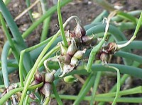

わけぎ（分葱）の生産量 都道府県ランキング
全16県の順位と、とれた量
わけぎが日本でいちばん多くとれるのは広島県です。200 tで、全国（396 t）の51%を占めます。

| 順位 | 都道府県 | 収穫量 | 全国に占める割合 |
|---|---|---|---|
| 1位 | 広島県 | 200 t | 51% |
| 2位 | 神奈川県 | 37 t | 9.3% |
| 3位 | 愛知県 | 34 t | 8.6% |
| 4位 | 大阪府 | 31 t | 7.8% |
| 5位 | 福岡県 | 24 t | 6.1% |
| 6位 | 茨城県 | 18 t | 4.5% |
| 7位 | 群馬県 | 14 t | 3.5% |
| 8位 | 鹿児島県 | 9 t | 2.3% |
| 9位 | 埼玉県 | 5 t | 1.3% |
| 10位 | 和歌山県 | 5 t | 1.3% |
| 11位 | 沖縄県 | 5 t | 1.3% |
| 12位 | 兵庫県 | 3 t | 0.8% |
| 13位 | 愛媛県 | 3 t | 0.8% |
| 14位 | 宮崎県 | 3 t | 0.8% |
| 15位 | 大分県 | 2 t | 0.5% |
| 16位 | 山口県 | 1 t | 0.3% |
この数字について
- 分類：ヒガンバナ科
- 全国の収穫量：396 t
- この数字が表すもの：収穫量（畑や田でとれた重さ）
- 調査：地域特産野菜生産状況調査 令和6年産
- 16県分を調査（調査していない県は順位に入りません）
わけぎの生産量について、よくある質問
- わけぎの生産量が日本一の都道府県はどこですか？
- 広島県です。地域特産野菜生産状況調査（令和6年産）で200 tでした。
- わけぎの生産量ランキング2位・3位はどこですか？
- 2位は神奈川県（37 t）、3位は愛知県（34 t）です。
- わけぎの生産量ランキング4位・5位はどこですか？
- 4位は大阪府（31 t）、5位は福岡県（24 t）です。わけぎの全16県の順位は上の表のとおりです。
- わけぎの全国の生産量はどれくらいですか？
- 396 t（令和6年産）です。